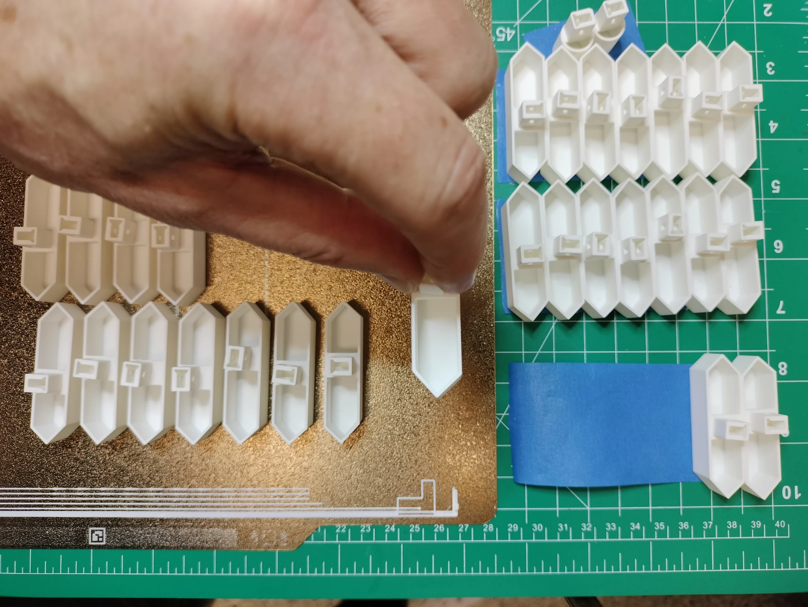

3D Print the Display Parts¶
Filament Quantity¶
Below is a table of quantities of filament by weight. Since a roll of filament is generally 1000g (sometimes a bit less), you'll need two rolls of White Matte PLA.
| Type | Weight (g) |
|---|---|
| Black Nylon | 77.1g |
| Black Matte PLA | 272.42g |
| White Matte PLA | 1535.44g |
| Black TPU | 115.15g |
1. Black Nylon, Smooth Build Plate¶
For Orca and Bambu Studio slicers, see .\fdm\3mf\nylon-smooth-black.3mf.
| File | Description | Density | Quantity | Per Unit (g) | Total (g) |
|---|---|---|---|---|---|
digit-gear30.stl |
Pinion gear for digits and colons | 100% | 30 | 1.1 | 33.0 |
rack-gear.stl |
The arm of the actuator that extends and retracts the segment | 25% | 30 | 1.47 | 44.1 |
2. Black Matte PLA, Smooth Build Plate¶
For Orca and Bambu Studio slicers, see .\fdm\3mf\pla-smooth-black.3mf.
| File | Description | Density | Quantity | Per Unit (g) | Total (g) |
|---|---|---|---|---|---|
digit-back-plate.stl |
Back plates for digits 0 and 3 for mounting the actuators | 50% | 3 | 47.43 | 142.29 |
digit-gear10.stl |
Motor shaft gear mounted onto the heavy-duty 103 motors | 100% | 30 | 0.5 | 15 |
digit1-back-plate.stl |
Conductor and digit 1 back plate for mounting the actuators | 50% | 1 | 67.7 | 67.7 |
digit2-back-plate.stl |
Back plate for digit 2 for mounting the actuators and powerbank/display stand | 50% | 1 | 47.43 | 47.43 |
3. White Matte PLA, Smooth Build Plate¶
For Orca and Bambu Studio slicers see .\fdm\3mf\pla-smooth-white.3mf
| File | Description | Density | Quantity | Per Unit (g) | Total (g) |
|---|---|---|---|---|---|
digit-motor-mount.stl |
Motor mount for digits and colons | 100% | 30 | 12.77 | 383.1 |
powerbank-cover.stl |
Cover for buck converters and powerbank PCB | 100% | 1 | 65.53 | 65.53 |
powerbank.stl |
Kinetic display stand, buck converter mounts, and powerbank PCB mount | 100% | 1 | 146.75 | 146.75 |
rackgear-bumper.stl |
Stops the segment or colon at the precise distance when extended | 100% | 30 | 0.61 | 18.3 |
seg-pin.stl |
Pin to hold the rack gear onto the segment and colons | 100% | 30 | 0.4 | 12 |
4. White Matte PLA, Textured Build Plate¶
For Orca and Bambu Studio slicers see .\fdm\3mf\pla-textured-white.3mf
| File | Description | Density | Quantity | Per Unit (g) | Total (g) |
|---|---|---|---|---|---|
| colon-seg.stl | Colon, upper and lower | 100% | 2 | 1.88 | 3.76 |
| digit0-1-face.stl | Kinetic display face, right side (when facing the front, textured surface side) | 70% | 1 | 395 | 395 |
| digit2-3-face.stl | Kinetic display face, left side (when facing the front, textured surface side) | 70% | 1 | 399 | 399 |
| seg-a.stl | Digit 7-segment A | 100% | 4 | 4 | 16 |
| seg-b.stl | Digit 7-segment B | 100% | 4 | 4 | 16 |
| seg-c.stl | Digit 7-segment C | 100% | 4 | 4 | 16 |
| seg-d.stl | Digit 7-segment D | 100% | 4 | 4 | 16 |
| seg-e.stl | Digit 7-segment E | 100% | 4 | 4 | 16 |
| seg-f.stl | Digit 7-segment F | 100% | 4 | 4 | 16 |
| seg-g.stl | Digit 7-segment G | 100% | 4 | 4 | 16 |
5. Black TPU, Smooth Build Plate¶
For Orca and Bambu Studio slicers see .\fdm\3mf\tpu-smooth-black.3mf
| File | Description | Density | Quantity | Per Unit (g) | Total (g) |
|---|---|---|---|---|---|
| digit-gasket.stl | Gaskets for digits 0 and 3 to cushion the PCB during segment retractions | 15% | 3 | 17.86 | 53.58 |
| digit1-gasket.stl | Gasket for the conductor and digit 1 to cushion the PCB during segment retractions | 15% | 1 | 31.71 | 31.71 |
| digit2-gasket.stl | Gasket for digits 2 to cushion the PCB during segment retractions | 15% | 1 | 17.86 | 17.86 |
| rackgear-bumper-gasket.stl | Provides some cushion for the rack gear when extended | 100% | 30 | 0.4 | 12 |
Guidelines¶
Below are a few guidelines to keep in mind when printing and assembling the display:
- Read the assembly guides: Read all the assembly guides in this documentation before printing to ensure you have a clear understanding of the fabrication type, quality, positioning, and assembly.
- Use the provided 3MF and STL files: The 3MF project files are included under the
./fdm/3mfdirectory for Bambu Studio or Orca Slicer users. All necessary settings are included at an object level, not on a global level. STL files are included under the./fdm/stldirectory. - Consistent filament usage: The display face uses over 2/3rds of a 1 KG roll of filament. Use the same roll of filament when printing both halves of the display face, segments, and colons. Ensure you have two 1 KG rolls of white filament from the same batch to avoid inconsistencies in print color.
- Dry your filament: Thoroughly dry your filament before use, especially nylon and flexible filament types. Wet filament can cause stringy prints and result in inexact gear teeth or hole sizes.
- Adhesion to the print bed: Apply an adhesive to the printer plate bed to prevent warping of edges and corners. For example, all-weather Aqua Net super hold hairspray provides an even coating of adhesive across the bed plate and results in clean corners and edges.
- Organize printed parts: Use painter's tape to keep the pieces organized. See the picture below for an example. Note that segments A-G (left to right) are preserved the moment the bed plate is removed from the 3D printer.
 - Ironing is optional: Do not worry if your 3D printer and slicer cannot iron the top surfaces. Ironing is for fit and finish and will not affect the functionality of the display.